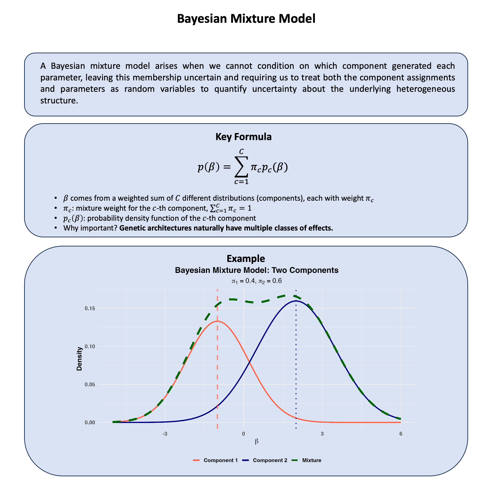

Bayesian Mixture Model#
A Bayesian mixture model arises when we cannot condition on which component generated each observation, so we treat component memberships as latent variables and integrate over both memberships and component parameters to quantify uncertainty about the underlying mixture structure in the data.
Graphical Summary#

Key Formula#
In a Bayesian mixture model, we cannot observe which component generated each observation, so we model this uncertainty by assuming the parameters come from a weighted combination of different distributions:
where:
\(\pi_c\) represents the probability that component \(c\) generated the parameters (mixing weights with \(\sum_{c=1}^{C} \pi_c = 1\))
\(p_c(\beta)\) is the prior distribution for parameters under component \(c\)
\(C\) is the number of components in the mixture
This captures heterogeneity by allowing the parameters to arise from different models, while quantifying our uncertainty about which subpopulation they belong to.
Technical Details#
In statistical genetics, we cannot condition on which type each genetic effect represents – null, moderate, or large. Bayesian mixture models explicitly quantify this uncertainty by treating parameters as arising from multiple possible distributions.
Component Assignment and Latent Variables#
Since we cannot observe which component generated each parameter \(\beta\), we introduce a latent variable \(Z \in \{1, 2, \ldots, C\}\) representing unknown membership:
where \(\pi_c\) are mixing weights satisfying \(\sum_{c=1}^C \pi_c = 1\).
Marginalizing over uncertainty: Since \(Z\) is unobserved, the prior for \(\beta\) integrates over all possible components:
This mixture prior captures our uncertainty about which component generated the parameter.
Prior Specification#
Mixing weights: For simplicity, we can use equal weights \(\pi_c = 1/C\) (expressing no prior preference), though in practice \(\boldsymbol{\pi}\) can be estimated from data.
For example, in the genetic effect framework, each component can represent a different effect type:
Component 1 (null): \(p_1(\beta) = \mathcal{N}(0, \sigma_1^2)\) with small \(\sigma_1^2\)
Component 2 (moderate): \(p_2(\beta) = \mathcal{N}(0, \sigma_2^2)\) with moderate \(\sigma_2^2\)
Component 3 (large): \(p_3(\beta) = \mathcal{N}(0, \sigma_3^2)\) with large \(\sigma_3^2\)
Components can differ in means, variances, or both, and can even use different distribution families.
Posterior Inference#
After observing data, Bayes’ rule updates our uncertainty about component membership:
This posterior probability quantifies remaining uncertainty about which component generated each parameter. Parameters consistent with component \(c\) receive higher posterior probability for that component.
Key Advantages#
Robust estimation: Mixture models prevent outliers from distorting estimates by assigning them to appropriate tail components.
Automatic regularization: Parameters are “shrunk” toward their component means, with the degree of shrinkage learned from data.
Flexible modeling: The mixture structure adapts to heterogeneity in effect sizes, population structure, or measurement contexts.
Example#
Recall our Lecture: Bayesian model comparison where we compare different models for the genetic effects on Height and Weight of a single genetic variant.
What about analyzing hundreds or thousands of variants simultaneously?
In reality, genetic variants follow different biological mechanisms that we cannot condition on:
Most variants have null effects on both traits
Some affect only Height (growth pathways)
Others affect only Weight (metabolism)
A few affect both traits with varying correlations
Since we cannot condition on which mechanism generated each variant, we observe only a heterogeneous scatter of effects with no clear pattern – a mixture of all models!
Bayesian mixture models address this by treating variant effects as arising from multiple unobserved components (recall the unobserved data we discussed in Lecture: expectation-maximum algorithm). Rather than assuming all variants follow the same model, we ask: “What mixture of different mechanisms best explains our data?”
Setup#
We generate data for multiple genetic variants from the same list of models as in Lecture: Bayesian model comparison:
\(\text{M}_0\) (No effect): \(\boldsymbol{\beta} = (0, 0)\)
\(\text{M}_1\) (Height Only): \(\beta_2 = 0\)
\(\text{M}_2\) (Weight Only): \(\beta_1 = 0\)
\(\text{M}_3\) (Perfect Correlation): \(\text{cor}(\beta_1, \beta_2) = 1\)
\(\text{M}_4\) (Weak Correlation): \(\text{cor}(\beta_1, \beta_2) = 0.1\)
\(\text{M}_5\) (Medium Correlation): \(\text{cor}(\beta_1, \beta_2) = 0.5\)
\(\text{M}_6\) (Strong Correlation): \(\text{cor}(\beta_1, \beta_2) = 0.8\)
The seven models above can actually be clustered into two groups – no pleiotropy vs pleiotropy:
No Pleiotropy Model: Mixture of \(\text{M}_0\), \(\text{M}_1\), \(\text{M}_2\) (null or single-trait effects)
Pleiotropy Model: Mixture of \(\text{M}_3\), \(\text{M}_4\), \(\text{M}_5\), \(\text{M}_6\) (correlated effects on both traits)
For each model, we assess detection performance and weight estimation accuracy.
rm(list = ls())
library(MASS)
library(mvtnorm)
library(ggplot2)
set.seed(91)
# Define parameters and component models
M <- 1000 # Number of genetic variants
N <- 10000 # Number of individuals (increased for better power)
# Effect size parameters - use larger effects for better detection
effect_variance <- 2.0 # Increased effect size for clearer signal
# Define the 7 models as covariance matrices
models <- list(
M0 = matrix(c(0, 0,
0, 0),
nrow = 2, ncol = 2),
M1 = matrix(c(effect_variance, 0,
0, 0),
nrow = 2, ncol = 2),
M2 = matrix(c(0, 0,
0, effect_variance),
nrow = 2, ncol = 2),
M3 = matrix(c(effect_variance, effect_variance,
effect_variance, effect_variance),
nrow = 2, ncol = 2),
M4 = matrix(c(effect_variance, 0.1 * effect_variance,
0.1 * effect_variance, effect_variance),
nrow = 2, ncol = 2),
M5 = matrix(c(effect_variance, 0.5 * effect_variance,
0.5 * effect_variance, effect_variance),
nrow = 2, ncol = 2),
M6 = matrix(c(effect_variance, 0.8 * effect_variance,
0.8 * effect_variance, effect_variance),
nrow = 2, ncol = 2)
)
# Initialize models dataframe
models_df <- data.frame(
Model = names(models),
stringsAsFactors = FALSE
)
Among all the variants being generated, we assign 40% of them to come from \(\text{M}_0\), 10% from \(\text{M}_1\), etc.
# Generate effect sizes from mixture distribution
mixture_weights <- c(0.40, 0.10, 0.10, 0.01, 0.19, 0.15, 0.05)
names(mixture_weights) <- names(models)
# Add mixture proportions to models_df
models_df$Mixture_Prop <- mixture_weights
# Randomly assign each variant to a component
set.seed(42)
component_assignments <- sample(names(models), size = M, replace = TRUE,
prob = mixture_weights)
# Generate bivariate effect sizes based on component assignment
beta_Height <- numeric(M)
beta_Weight <- numeric(M)
for (i in 1:M) {
model_name <- component_assignments[i]
cov_matrix <- models[[model_name]]
if (model_name == "M0") {
beta_Height[i] <- 0
beta_Weight[i] <- 0
} else {
cov_matrix_reg <- cov_matrix + diag(1e-8, 2)
effects <- mvrnorm(1, mu = c(0, 0), Sigma = cov_matrix_reg)
beta_Height[i] <- effects[1]
beta_Weight[i] <- effects[2]
}
}
null_variants <- sum(component_assignments == "M0")
nonpleiotropic_variants <- sum(component_assignments %in% c("M0", "M1", "M2"))
pleiotropic_variants <- sum(component_assignments %in% c("M3", "M4", "M5", "M6"))
component_counts <- table(component_assignments)
cat("\nGenerated effect sizes for", M, "variants:\n")
component_counts
Generated effect sizes for 1000 variants:
component_assignments
M0 M1 M2 M3 M4 M5 M6
421 99 98 7 198 128 49
The following figure shows a mixture of genetic effects on Height and Weight.
# Visualize the mixture of effect sizes
component_colors <- c("M0" = "gray70", "M1" = "steelblue", "M2" = "coral",
"M3" = "gold", "M4" = "purple", "M5" = "darkgreen", "M6" = "brown")
plot_data <- data.frame(
Height_Effect = beta_Height,
Weight_Effect = beta_Weight,
Component = component_assignments
)
p1 <- ggplot(plot_data, aes(x = Height_Effect, y = Weight_Effect, color = Component)) +
geom_point(size = 2.5, alpha = 0.7) +
geom_hline(yintercept = 0, linetype = "dashed", color = "gray40") +
geom_vline(xintercept = 0, linetype = "dashed", color = "gray40") +
scale_color_manual(values = component_colors,
labels = paste0(names(component_counts), " (n=", component_counts, ")")) +
labs(
title = "True Mixture of Genetic Effects",
subtitle = paste("Non-pleiotropy:", nonpleiotropic_variants, "| Pleiotropic:", pleiotropic_variants),
x = "Effect on Height (β₁)",
y = "Effect on Weight (β₂)"
) +
theme_minimal(base_size = 14) +
theme(
plot.title = element_text(hjust = 0.5, face = "bold", size = 16),
plot.subtitle = element_text(hjust = 0.5, size = 12),
axis.title = element_text(face = "bold"),
legend.title = element_text(face = "bold"),
legend.position = "right"
)
print(p1)
{kind=link}
And if we break the figure down to each model:
# Visualize each component separately to see their distinct patterns
par(mfrow = c(2, 4), mar = c(4, 4, 3, 1))
for (comp in names(models)) {
idx <- which(component_assignments == comp)
if (length(idx) > 0) {
h_effects <- beta_Height[idx]
w_effects <- beta_Weight[idx]
plot(h_effects, w_effects,
main = paste(comp, "(n=", length(idx), ")", sep=""),
xlab = "Height Effect", ylab = "Weight Effect",
col = component_colors[comp], pch = 16,
xlim = c(-3, 3), ylim = c(-3, 3))
abline(h = 0, v = 0, lty = 2, col = "gray")
# Add correlation line for M3 (perfect correlation)
if (comp == "M3") abline(0, 1, col = component_colors[comp], lwd = 2)
} else {
plot(0, 0, type = "n", xlim = c(-3, 3), ylim = c(-3, 3),
main = paste(comp, "(n=0)", sep=""),
xlab = "Height Effect", ylab = "Weight Effect")
abline(h = 0, v = 0, lty = 2, col = "gray")
}
}
par(mfrow = c(1, 1))

Based on the genetic effects of all variants, we simulate the phenotype data:
# Generate genotype and phenotype data
maf <- 0.3
X <- matrix(rbinom(N * M, size = 2, prob = maf), nrow = N, ncol = M)
# Calculate genetic values
genetic_Height <- as.vector(X %*% beta_Height)
genetic_Weight <- as.vector(X %*% beta_Weight)
h2 <- 0.7 # 70% heritability (increased for better detection)
var_genetic_Height <- var(genetic_Height)
var_genetic_Weight <- var(genetic_Weight)
var_error_Height <- var_genetic_Height * (1 - h2) / h2
var_error_Weight <- var_genetic_Weight * (1 - h2) / h2
error_Height <- rnorm(N, mean = 0, sd = sqrt(var_error_Height))
error_Weight <- rnorm(N, mean = 0, sd = sqrt(var_error_Weight))
phenotype_Height <- genetic_Height + error_Height
phenotype_Weight <- genetic_Weight + error_Weight
Prior Distribution#
We specify an equal prior across all 7 components (each with weight 1/7), expressing no prior preference for any specific model. This allows the data to fully drive the inference.
For Height effects:
\(\text{M}_0\) and \(\text{M}_2\) have \(\sigma = 0\) (no Height effect)
\(\text{M}_1\), \(\text{M}_3\)-\(\text{M}_6\) have \(\sigma = \sqrt{2}\) (potential Height effects)
For Weight effects:
\(\text{M}_0\) and \(\text{M}_1\) have \(\sigma = 0\) (no Weight effect)
\(\text{M}_2\), \(\text{M}_3\)-\(\text{M}_6\) have \(\sigma = \sqrt{2}\) (potential Weight effects)
Note: The true data-generating mixture has most variants from \(\text{M}_0\) (null), creating a realistic scenario where we must detect rare pleiotropic variants.
# Define mixture prior weights - use EQUAL priors
prior_weights <- rep(1/7, 7)
names(prior_weights) <- names(models)
# Add prior proportions to models_df
models_df$prior_weights <- prior_weights
# Prior standard deviations for BOTH Height and Weight effects
prior_sigma_Height <- c(
M0 = 0, # Null: no Height effect
M1 = sqrt(effect_variance), # Height-specific
M2 = 0, # Weight-specific: no Height effect
M3 = sqrt(effect_variance), # Pleiotropic
M4 = sqrt(effect_variance), # Pleiotropic
M5 = sqrt(effect_variance), # Pleiotropic
M6 = sqrt(effect_variance) # Pleiotropic
)
prior_sigma_Weight <- c(
M0 = 0, # Null: no Weight effect
M1 = 0, # Height-specific: no Weight effect
M2 = sqrt(effect_variance), # Weight-specific
M3 = sqrt(effect_variance), # Pleiotropic
M4 = sqrt(effect_variance), # Pleiotropic
M5 = sqrt(effect_variance), # Pleiotropic
M6 = sqrt(effect_variance) # Pleiotropic
)
# Add to models_df
models_df$Prior_Sigma_Height <- prior_sigma_Height
models_df$Prior_Sigma_Weight <- prior_sigma_Weight
cat("\nMixture Prior for Height and Weight Effects (Equal Priors):\n")
models_df
Mixture Prior for Height and Weight Effects (Equal Priors):
| Model | Mixture_Prop | prior_weights | Prior_Sigma_Height | Prior_Sigma_Weight |
|---|---|---|---|---|
| <chr> | <dbl> | <dbl> | <dbl> | <dbl> |
| M0 | 0.40 | 0.1428571 | 0.000000 | 0.000000 |
| M1 | 0.10 | 0.1428571 | 1.414214 | 0.000000 |
| M2 | 0.10 | 0.1428571 | 0.000000 | 1.414214 |
| M3 | 0.01 | 0.1428571 | 1.414214 | 1.414214 |
| M4 | 0.19 | 0.1428571 | 1.414214 | 1.414214 |
| M5 | 0.15 | 0.1428571 | 1.414214 | 1.414214 |
| M6 | 0.05 | 0.1428571 | 1.414214 | 1.414214 |
Likelihood and Marginal Likelihood#
For each variant, we compute the marginal likelihood \(P(\text{Data} | \text{Component})\) under each component by integrating over the effect size parameter. This uses conjugate normal-normal priors for analytical tractability.
# Compute marginal likelihood and posterior probabilities using BOTH phenotypes
Y_Height <- phenotype_Height
Y_Weight <- phenotype_Weight
compute_posterior_mixture <- function(X, Y_Height, Y_Weight, pi_mix, sigma_Height, sigma_Weight) {
M <- ncol(X)
N <- nrow(X)
n_comp <- length(pi_mix)
posterior_probs <- matrix(0, nrow = M, ncol = n_comp)
colnames(posterior_probs) <- names(pi_mix)
# Estimate residual covariance from phenotypes
Sigma_residual <- cov(cbind(Y_Height, Y_Weight))
sigma_e_Height <- sqrt(Sigma_residual[1,1])
sigma_e_Weight <- sqrt(Sigma_residual[2,2])
rho_residual <- Sigma_residual[1,2] / (sigma_e_Height * sigma_e_Weight)
for (i in 1:M) {
Xi <- X[, i]
Xi_std <- (Xi - mean(Xi)) / sd(Xi) # Standardize genotype
# Compute log marginal likelihood for each component
log_ml <- numeric(n_comp)
for (c in 1:n_comp) {
sigma_beta_Height <- sigma_Height[c]
sigma_beta_Weight <- sigma_Weight[c]
# Build prior covariance for this component
if (sigma_beta_Height == 0 && sigma_beta_Weight == 0) {
# M0: Null component - no effect on either trait
# Use null likelihood
log_ml[c] <- sum(dmvnorm(cbind(Y_Height, Y_Weight),
mean = c(mean(Y_Height), mean(Y_Weight)),
sigma = Sigma_residual, log = TRUE))
} else if (sigma_beta_Height == 0) {
# M2: Weight-only effect
# Compute univariate Bayes factor for Weight, null for Height
cor_XY_Weight <- cor(Xi_std, Y_Weight)
z_score_Weight <- cor_XY_Weight * sqrt(N - 1)
W_Weight <- sigma_beta_Weight^2 / (sigma_e_Weight^2 / N)
log_bf_Weight <- 0.5 * log(1 / (1 + W_Weight)) + 0.5 * W_Weight / (1 + W_Weight) * z_score_Weight^2
log_ml_null <- sum(dmvnorm(cbind(Y_Height, Y_Weight),
mean = c(mean(Y_Height), mean(Y_Weight)),
sigma = Sigma_residual, log = TRUE))
log_ml[c] <- log_ml_null + log_bf_Weight
} else if (sigma_beta_Weight == 0) {
# M1: Height-only effect
# Compute univariate Bayes factor for Height, null for Weight
cor_XY_Height <- cor(Xi_std, Y_Height)
z_score_Height <- cor_XY_Height * sqrt(N - 1)
W_Height <- sigma_beta_Height^2 / (sigma_e_Height^2 / N)
log_bf_Height <- 0.5 * log(1 / (1 + W_Height)) + 0.5 * W_Height / (1 + W_Height) * z_score_Height^2
log_ml_null <- sum(dmvnorm(cbind(Y_Height, Y_Weight),
mean = c(mean(Y_Height), mean(Y_Weight)),
sigma = Sigma_residual, log = TRUE))
log_ml[c] <- log_ml_null + log_bf_Height
} else {
# M3-M6: Pleiotropic effects on both traits
# Use bivariate Bayes factor approximation
# Correlations with both traits
cor_XY_Height <- cor(Xi_std, Y_Height)
cor_XY_Weight <- cor(Xi_std, Y_Weight)
z_Height <- cor_XY_Height * sqrt(N - 1)
z_Weight <- cor_XY_Weight * sqrt(N - 1)
# Prior precision and data precision for each trait
# Simplified approximation: treat traits independently for BF computation
W_Height <- sigma_beta_Height^2 / (sigma_e_Height^2 / N)
W_Weight <- sigma_beta_Weight^2 / (sigma_e_Weight^2 / N)
log_bf_Height <- 0.5 * log(1 / (1 + W_Height)) + 0.5 * W_Height / (1 + W_Height) * z_Height^2
log_bf_Weight <- 0.5 * log(1 / (1 + W_Weight)) + 0.5 * W_Weight / (1 + W_Weight) * z_Weight^2
# Combined log BF for both traits (approximation)
log_bf_bivariate <- log_bf_Height + log_bf_Weight
log_ml_null <- sum(dmvnorm(cbind(Y_Height, Y_Weight),
mean = c(mean(Y_Height), mean(Y_Weight)),
sigma = Sigma_residual, log = TRUE))
log_ml[c] <- log_ml_null + log_bf_bivariate
}
}
# Apply Bayes' rule
log_post <- log(pi_mix) + log_ml
# Normalize
max_log <- max(log_post[is.finite(log_post)])
log_post <- log_post - max_log
post <- exp(log_post)
posterior_probs[i, ] <- post / sum(post)
}
return(posterior_probs)
}
posterior_probs <- compute_posterior_mixture(X, Y_Height, Y_Weight, prior_weights,
prior_sigma_Height, prior_sigma_Weight)
cat("\nPosterior component probabilities (first 5 variants):\n")
round(posterior_probs[1:5, ], 3)
Posterior component probabilities (first 5 variants):
| M0 | M1 | M2 | M3 | M4 | M5 | M6 |
|---|---|---|---|---|---|---|
| 0.001 | 0.573 | 0.000 | 0.106 | 0.106 | 0.106 | 0.106 |
| 0.452 | 0.277 | 0.079 | 0.048 | 0.048 | 0.048 | 0.048 |
| 0.619 | 0.110 | 0.158 | 0.028 | 0.028 | 0.028 | 0.028 |
| 0.004 | 0.001 | 0.496 | 0.125 | 0.125 | 0.125 | 0.125 |
| 0.000 | 0.000 | 0.534 | 0.117 | 0.117 | 0.117 | 0.117 |
Posterior Distribution#
Using Bayes’ rule, we update from prior to posterior component probabilities for each variant:
Each variant is assigned to the component with highest posterior probability.
# Classify variants based on highest posterior probability
posterior_classification <- colnames(posterior_probs)[apply(posterior_probs, 1, which.max)]
# Compute empirical posterior weights
posterior_weights_empirical <- colMeans(posterior_probs)
models_df$Posterior_Weight <- posterior_weights_empirical
# Define component groups for mixture model evaluation
no_pleiotropy_components <- c("M0", "M1", "M2")
pleiotropy_components <- c("M3", "M4", "M5", "M6")
# Calculate posterior probabilities for each mixture model group
prob_no_pleiotropy <- rowSums(posterior_probs[, no_pleiotropy_components])
prob_pleiotropy <- rowSums(posterior_probs[, pleiotropy_components])
# Classify variants into mixture model groups
# A variant is classified as "pleiotropy" if sum of M3-M6 posterior > sum of M0-M2 posterior
is_pleiotropy_posterior <- prob_pleiotropy > prob_no_pleiotropy
# True group assignments
is_pleiotropy_true <- component_assignments %in% pleiotropy_components
is_no_pleiotropy_true <- component_assignments %in% no_pleiotropy_components
# Confusion matrix
# TP: True pleiotropy, classified as pleiotropy (M3/M4/M5/M6 → any of M3/M4/M5/M6)
# TN: True no pleiotropy, classified as no pleiotropy (M0/M1/M2 → any of M0/M1/M2)
# FP: True no pleiotropy, classified as pleiotropy (M0/M1/M2 → any of M3/M4/M5/M6)
# FN: True pleiotropy, classified as no pleiotropy (M3/M4/M5/M6 → any of M0/M1/M2)
true_positive <- sum(is_pleiotropy_true & is_pleiotropy_posterior)
false_positive <- sum(is_no_pleiotropy_true & is_pleiotropy_posterior)
true_negative <- sum(is_no_pleiotropy_true & !is_pleiotropy_posterior)
false_negative <- sum(is_pleiotropy_true & !is_pleiotropy_posterior)
cat("\n=== Pleiotropy Detection Performance ===\n\n")
cat("Confusion Matrix:\n")
confusion_matrix <- matrix(c(true_negative, false_positive,
false_negative, true_positive),
nrow = 2, byrow = TRUE,
dimnames = list(c("True: No Pleiotropy", "True: Pleiotropy"),
c("Pred: No Pleiotropy", "Pred: Pleiotropy")))
confusion_matrix
=== Pleiotropy Detection Performance ===
Confusion Matrix:
| Pred: No Pleiotropy | Pred: Pleiotropy | |
|---|---|---|
| True: No Pleiotropy | 573 | 45 |
| True: Pleiotropy | 162 | 220 |
Weight Estimation Evaluation#
We evaluate how well the mixture model estimates component weights by comparing true mixture proportions with posterior weights.
# Compute aggregated weights for the two mixture models
no_pleiotropy_true_weight <- sum(models_df$Mixture_Prop[models_df$Model %in% no_pleiotropy_components])
pleiotropy_true_weight <- sum(models_df$Mixture_Prop[models_df$Model %in% pleiotropy_components])
no_pleiotropy_posterior_weight <- sum(models_df$Posterior_Weight[models_df$Model %in% no_pleiotropy_components])
pleiotropy_posterior_weight <- sum(models_df$Posterior_Weight[models_df$Model %in% pleiotropy_components])
# Create summary for mixture models
mixture_model_comparison <- data.frame(
Mixture_Model = c("No Pleiotropy (M0-M2)", "Pleiotropy (M3-M6)"),
True_Proportion = c(no_pleiotropy_true_weight, pleiotropy_true_weight),
Posterior_Weight = c(no_pleiotropy_posterior_weight, pleiotropy_posterior_weight),
Difference = c(no_pleiotropy_posterior_weight - no_pleiotropy_true_weight,
pleiotropy_posterior_weight - pleiotropy_true_weight)
)
cat("\n=== Mixture Model Weight Comparison ===\n")
mixture_model_comparison
# Visualize component-level weights: prior vs posterior weights
weight_data <- data.frame(
Component = rep(models_df$Model, 2),
Weight = c(models_df$prior_weights, models_df$Posterior_Weight),
Type = factor(rep(c("prior weights", "posterior weights"), each = nrow(models_df)),
levels = c("prior weights", "posterior weights"))
)
p2 <- ggplot(weight_data, aes(x = Component, y = Weight, fill = Type)) +
geom_col(position = position_dodge(width = 0.8), width = 0.7,
color = "black", linewidth = 0.8) +
geom_text(aes(label = round(Weight, 3)),
position = position_dodge(width = 0.8), vjust = -0.5,
size = 4, fontface = "bold") +
scale_fill_manual(values = c("prior weights" = "tomato", "posterior weights" = "darkgreen")) +
labs(
title = "Separate Model Weights: Prior vs Posterior",
y = "weights",
x = "Model"
) +
ylim(0, max(weight_data$Weight) * 1.15) +
theme_minimal(base_size = 14) +
theme(
plot.title = element_text(hjust = 0.5, face = "bold", size = 16),
plot.subtitle = element_text(hjust = 0.5, size = 12),
axis.title = element_text(face = "bold"),
legend.title = element_blank(),
legend.text = element_text(face = "bold", size = 12),
legend.position = "bottom"
)
print(p2)
=== Mixture Model Weight Comparison ===
| Mixture_Model | True_Proportion | Posterior_Weight | Difference |
|---|---|---|---|
| <chr> | <dbl> | <dbl> | <dbl> |
| No Pleiotropy (M0-M2) | 0.6 | 0.6178354 | 0.0178354 |
| Pleiotropy (M3-M6) | 0.4 | 0.3821646 | -0.0178354 |
{kind=link}
# Visualize mixture model level comparison: Prior vs Posterior
# Use PRIOR proportions for comparison (not true mixture proportions)
no_pleiotropy_prior_prop <- sum(models_df$prior_weights[models_df$Model %in% no_pleiotropy_components])
pleiotropy_prior_prop <- sum(models_df$prior_weights[models_df$Model %in% pleiotropy_components])
mixture_plot_data <- data.frame(
Mixture_Model = rep(c("No Pleiotropy\n(M0-M2)", "Pleiotropy\n(M3-M6)"), 2),
Weight = c(no_pleiotropy_prior_prop, pleiotropy_prior_prop,
no_pleiotropy_posterior_weight, pleiotropy_posterior_weight),
Type = factor(rep(c("prior weights", "posterior weights"), each = 2),
levels = c("prior weights", "posterior weights"))
)
p3 <- ggplot(mixture_plot_data, aes(x = Mixture_Model, y = Weight, fill = Type)) +
geom_col(position = position_dodge(width = 0.8), width = 0.6,
color = "black", linewidth = 1) +
geom_text(aes(label = round(Weight, 3)),
position = position_dodge(width = 0.8), vjust = -0.5,
size = 5, fontface = "bold") +
scale_fill_manual(values = c("prior weights" = "tomato", "posterior weights" = "darkgreen")) +
labs(
title = "Comparison of Two Mixture Models",
y = "Posterior weights",
x = "Mixture Model"
) +
ylim(0, max(mixture_plot_data$Weight) * 1.2) +
theme_minimal(base_size = 14) +
theme(
plot.title = element_text(hjust = 0.5, face = "bold", size = 16),
plot.subtitle = element_text(hjust = 0.5, size = 12),
axis.title = element_text(face = "bold"),
axis.text.x = element_text(face = "bold", size = 12),
legend.title = element_blank(),
legend.text = element_text(face = "bold", size = 12),
legend.position = "bottom"
)
print(p3)
{kind=link}
Supplementary#
library(ggplot2)
library(dplyr)
# Set parameters for two components
mu1 <- -1 # Mean of component 1
mu2 <- 2 # Mean of component 2
sigma1 <- 1.2 # SD of component 1
sigma2 <- 1.5 # SD of component 2
pi1 <- 0.4 # Weight of component 1
pi2 <- 0.6 # Weight of component 2
# Create data for plotting
x <- seq(-5, 6, length.out = 1000)
# Individual component densities
component1 <- pi1 * dnorm(x, mu1, sigma1)
component2 <- pi2 * dnorm(x, mu2, sigma2)
# Mixture density
mixture <- component1 + component2
# Create data frame for plotting
plot_data <- data.frame(
x = rep(x, 3),
density = c(component1, component2, mixture),
distribution = rep(c("Component 1", "Component 2", "Mixture"), each = length(x))
)
# Create the plot
p <- ggplot(plot_data, aes(x = x, y = density, color = distribution, linetype = distribution)) +
geom_line(aes(linewidth = distribution)) +
scale_linewidth_manual(values = c("Component 1" = 1.2,
"Component 2" = 1.2,
"Mixture" = 2.0)) +
scale_color_manual(values = c("Component 1" = "tomato",
"Component 2" = "#000080",
"Mixture" = "darkgreen")) +
scale_linetype_manual(values = c("Component 1" = "solid",
"Component 2" = "solid",
"Mixture" = "dashed")) +
labs(
title = "Bayesian Mixture Model: Two Components",
subtitle = expression(paste(pi[1], " = 0.4, ", pi[2], " = 0.6")),
x = expression(beta),
y = "Density",
color = "Distribution",
linetype = "Distribution"
) +
theme_minimal(base_size = 14) +
theme(
plot.title = element_text(hjust = 0.5, face = "bold"),
plot.subtitle = element_text(hjust = 0.5),
axis.title.y = element_text(face = "bold"),
axis.title.x = element_text(face = "bold"),
axis.text.x = element_text(face = "bold"),
axis.text.y = element_text(face = "bold"),
legend.title = element_blank(),
legend.text = element_text(face = "bold"),
legend.position = "bottom",
panel.background = element_rect(fill = "transparent", color = NA),
plot.background = element_rect(fill = "transparent", color = NA)
) +
guides(color = guide_legend(override.aes = list(linewidth = 1.5)),
linewidth = "none")
# Add vertical lines for component means and labels
p <- p +
geom_vline(xintercept = mu1, color = "tomato", linetype = "dashed", alpha = 0.7, linewidth = 1.2) +
geom_vline(xintercept = mu2, color = "#000080", linetype = "dotted", alpha = 0.7, linewidth = 1.2)
# Display the plot
print(p)
# Save the plot
ggsave("./figures/Bayesian_mixture_model.png", plot = p,
width = 10, height = 6,
bg = "transparent",
dpi = 300)
{kind=link}